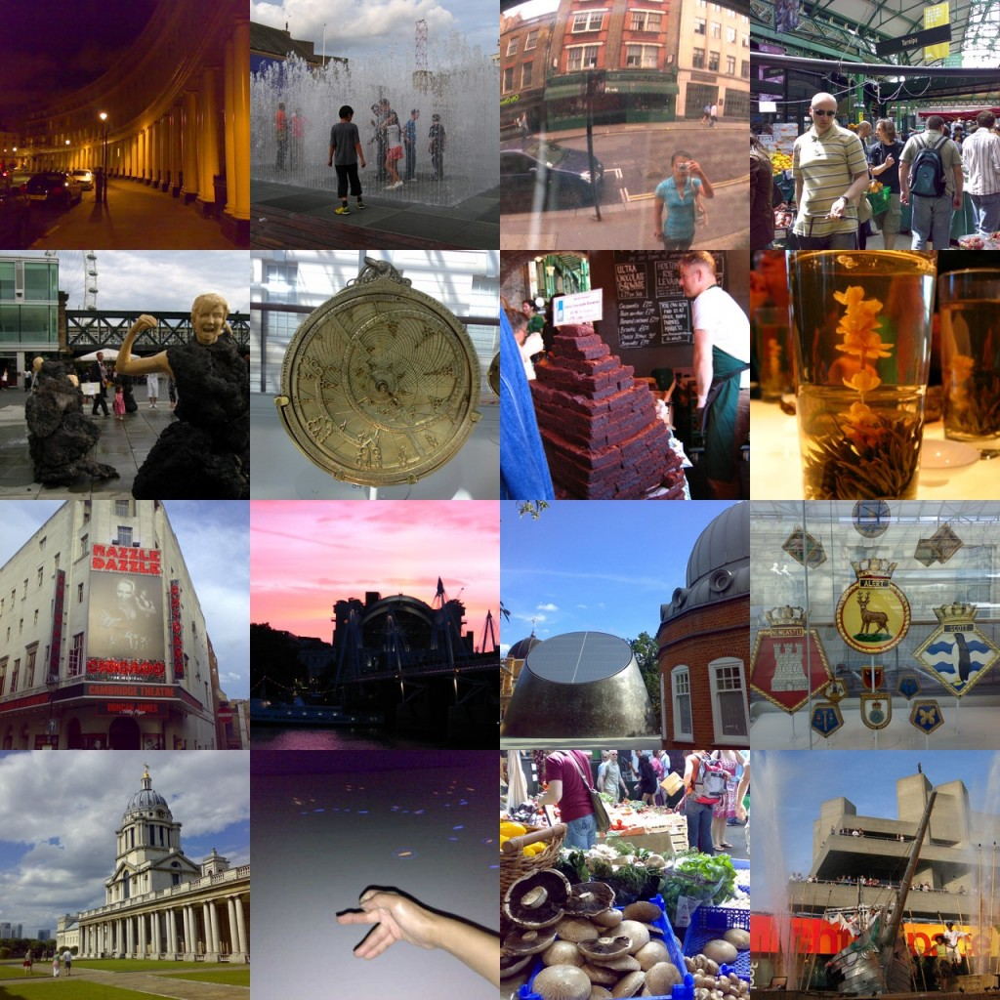

hullo from sunny/cloudy/rainy/sunny again london!
It’s been quite fun summer so far (odd weather aside).
Went to markets last weekend – Borough (2 times in 2 weeks) & Notting Hill  Made our way chomping through oysters, lamington & cheesecake, hot & cold apple cider & Monmounth coffee. Got rained on in Notting Hill, and saw a green Lamborghini with Arabic plates in Holland Park. I was told in Dubai that visiting sheikhs like to fly their cars over to London with them for visits – understandable, as cars are sensitive like babies, pets & senior citizens.
Made our way chomping through oysters, lamington & cheesecake, hot & cold apple cider & Monmounth coffee. Got rained on in Notting Hill, and saw a green Lamborghini with Arabic plates in Holland Park. I was told in Dubai that visiting sheikhs like to fly their cars over to London with them for visits – understandable, as cars are sensitive like babies, pets & senior citizens.
Weekend before saw Z’s sister doing a open air performance in front of National Theatre. It was inspired by (I use the term loosely) Shakespeare’s Tempest. Hung about South Thames enjoying brilliant warm afternoon. Also got to watch Chicago (a colleague said he’d go watch hot chicks in knickers & fishnets anytime).
Greenwich was fun as soon as I got off the wrong train to Orphington & onto the correct train to Greenwich. Unfortunately I got there too late to stand across the Greenwich line, but the Maritime Museum was quite alright.
And best bit was watching Keane at the O2 dome (formerly known as the Millenium Dome). Everyone really got into the music, standing, dancing & singing. Great live performance.
First lesson of parkour last week, quite alright if you fancy running, jumping, flipping, stretching & sit ups. This is parkour (not park hour):
http://www.timeout.com/london/sport/features/175/2.html#parkour
Flooding all around London, some lines affected & people’s houses have been flooded. I’m living pretty centrally, so it’s alright here but people are taking it as good with the bad – at least the water reserves are up.
Finally settled in. Busy at work, but not working weekends or late nights yet thank goodness.
Hope all is well with you, and without further ado, here are the pics
 shi.
shi.